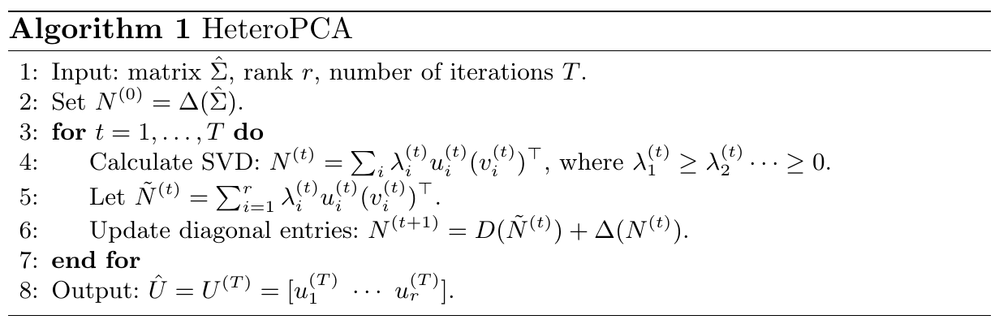

写在前面
张安如老师到我们学校做过一次报告，记录下感兴趣的异方差主成分分析(Heteroskedastic PCA)算法。
异方差主成分分析
主成分分析
PCA的核心思想是从含噪数据中恢复出低秩成分，那么这个噪声通常是同方差的，其观察信号满足如下正态分布
Y1,…,Yn∼iidN(μ,Σ0+σ2Ip)
其中协方差Σ0=UΛU⊤是一个对称的低秩矩阵，尖峰协方差模型也可写成和的形式
Yk=Xk+εk,{Xk∼iidN(μ,Σ0)εk∼iidN(0,σ2Ip)
这里的一个关键假设是误差是同方差的(homoskedastic)，即每个εk服从球对称的高斯分布(σ2Ip)。然而实际应用中噪声通常是异方差的(heteroskedastic)，即噪声扰动大小在数据矩阵中的各个元素之间变化很大。因此下面考虑适用范围的推广。
对角删除的奇异值分解
假设受到高斯噪声的方差不一致，从而考虑广义的尖峰协方差模型
Y=X+ε,EX=μ,Eε=0,Cov(X)=Σ0,Cov(ε)=diag(σ12,…,σp2)
其中低秩部分X与噪声ε=((ε)1,…,(ε)p)⊤相互独立。
如果采取传统的主成分分析，首先计算中心化的样本协方差矩阵
Σ^=n−11k=1∑n(Yk−Yˉ)(Yk−Yˉ)⊤.
注意到
EΣ^=Σ0+diag(σ12,…,σp2)
- σ12,…,σp2相等时，EΣ^与Σ0的特征向量相同
- σ12,…,σp2不等时，EΣ^与Σ0的主成分(特征向量)不等
这说明异方差的噪声虽然仅影响了协方差的对角元素，但奇异值分解得到的奇异向量存在很大的差异性，因此传统的奇异值分解无法满足异方差噪声的情况。
既然噪声仅影响矩阵的对角线元素，那么能不能想办法去无视或者修正这一影响来进行正确的分解？为此，对角删除的奇异值分解(diagonal-deletion SVD)算法将Gram矩阵的对角线设置为零，然后执行奇异值分解。
对任意方阵A，记Δ(A)为A对角线元素均为0的矩阵，D(A)为A非对角线元素均为0的矩阵，则A=Δ(A)+D(A)。那么传统的SVD分解可表示为
U~=SVDr(Σ^)
而对角删除的SVD则表示为
U~=SVDr(Δ(Σ^))
不过用零替代对角元的做法可能会带来更大的扰动，另一方面无法保证有效性。
异方差主成分分析
异方差主成分分析则考虑使用非对角线元素的奇异值分解来重构对角线元素，考虑如下非凸的优化问题：
U^=SVDr(M^),whereM^=argM^:rank(M^)≤rmin∥∥∥∥Δ(M^−Σ^)∥∥∥∥.
使用如下迭代方法求解
初始化N(0)=Δ(Σ^)
循环直至收敛或达到最大迭代数
N(t)=U(t)Σ(t)(V(t))⊤=i∑λi(t)ui(t)(vi(t))⊤
设置秩r的近似
N~(t)=i=1∑rλi(t)ui(t)(vi(t))⊤
用N~(t)的对角元替换到N(t)，更新N(t+1)=D(N~(t))+Δ(N(t))
Nij(t+1)={Nij(t)=Σ^ij,N~ij(t),i=j;i=j.
更新t=t+1
算法流程

小结
本文的想法很新颖，根据非对角线迭代更新对角线元素，这种做法表现出信息之间存在某种联系，那么除对角线以外是否还能恢复其他结构的元素？这个有待思考。
参考文献